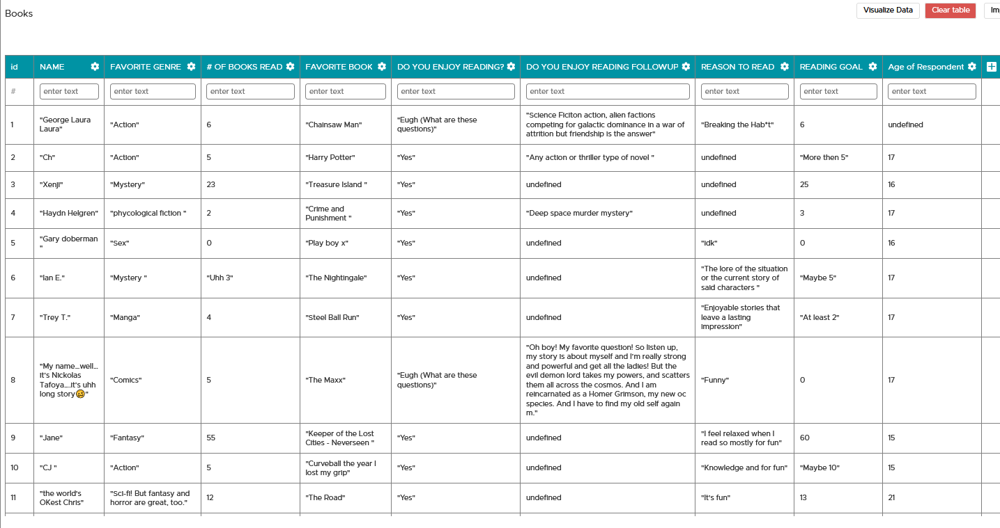
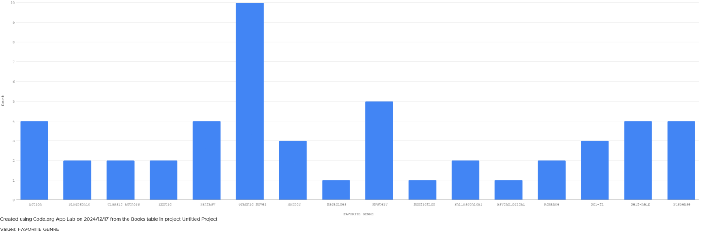
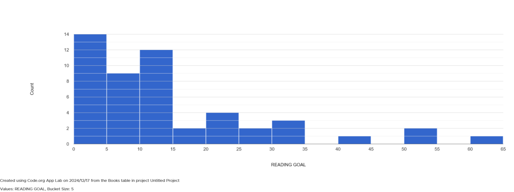

Student Learning Portfolio
Unit V: Crowdsourcing Data
SECTION 1
SECTION 2
 SECTION 3
The quite novel topic of books piqued my interest because I had originally wanted to choose music, but I felt that it was already being done by others in some capacity. So I changed my route to people's favorite books and the story of how age might have an effect over the types of reading people prefer, as well as the amount that they read. My main motivation from gathering the data is to gain as much insight as I can towards the collective interest by teens in what types of novels they have interest in and what we get out of reading. My steps towards collecting the data were varied as to maintain a more widespread collection of data, I would find different groups of people and ask for their input on the survey. I believe the varying ages of the respondents can be attested to this. In my responses, I felt that there were certain outliers that didn't respond with genuinity or stating wild genres as a joke. I highly doubt that the survey taker would have that choice as a serious favorite, so my theory is satire. I won't remove or censor the data because I think it's important to uphold the truth of the results. A trend of the bias towards my data is that most respondents that took my survey did it because they had an interest in reading. I think a mistake I made was telling them what the survey was about and it diverted people that didn't like books or reading and in turn, gravitated towards people that were interested.